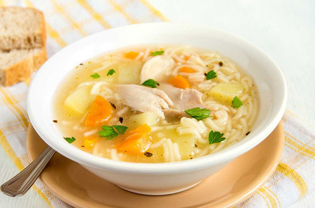

Caldo de Pollo

This is latino chicken soup! A super healthy dish made of chicken, rice and vegetables, perfect for those cold days when you want something warm to eat :D
Ingredients
- 300 grams of chicken breast with no skin
- 2 1/2 liters of water
- 50 grams of onions
- 2 garlic cloves
- Carrots
- Cilantro
Steps
- Perfectly wash the chicken pieces and boil it in a pot with water
- Remove all the foam and throw it away
- Add the onion and garlic, cook it for 40 minutes or until the chicken is soft
- Remove the chicken from the pot and shred it
- Add the vegetables, the cilantro and the chicken and let it boil for 5 more minutes
- Serve